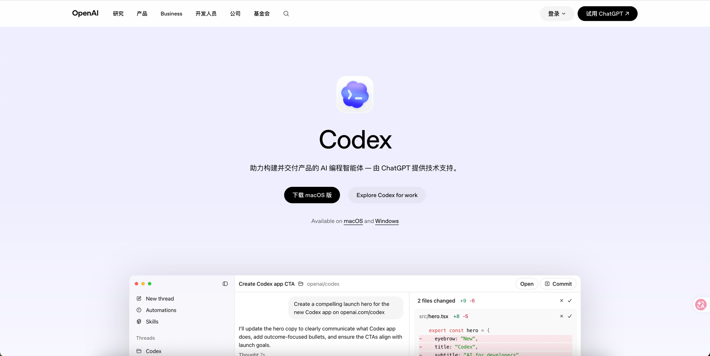
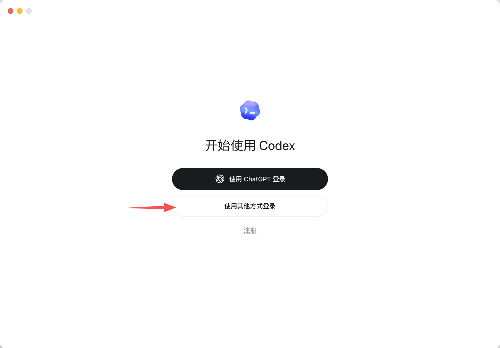
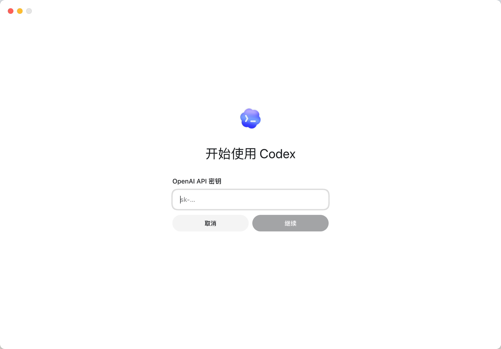

工具使用
Codex 安装与配置
INSTALL & CONFIGURE CODEX WITH MANTAI LLM
Codex 是 OpenAI 推出的桌面端 AI 编程智能体，由 ChatGPT 提供技术支持。通过以下步骤，你可以将其连接到 mantai LLM 服务，使用 AI 辅助编程。

1
下载并安装 Codex
从 OpenAI 官网下载 Codex 桌面客户端，支持 macOS 和 Windows：
下载完成后按照系统提示完成安装。macOS 用户将 .dmg 中的 Codex 拖入 Applications 文件夹；Windows 用户运行安装程序即可。
2
配置 LLM API
在终端中运行以下命令，自动配置 mantai LLM 服务（已有配置不会被覆盖）：
mkdir -p ~/.codex
if grep -q '^model_provider' ~/.codex/config.toml 2>/dev/null; then
sed -i.bak 's/^model_provider.*/model_provider = "mantai"/' ~/.codex/config.toml
else
sed -i.bak 's/^model /model_provider = "mantai"\nmodel /' ~/.codex/config.toml
fi
if ! grep -q '\[model_providers.mantai\]' ~/.codex/config.toml 2>/dev/null; then
cat >> ~/.codex/config.toml << 'EOF'
[model_providers.mantai]
name = "mantai"
base_url = "https://llm.mantai.me/v1"
wire_api = "responses"
requires_openai_auth = true
EOF
fi
$dir = "$env:USERPROFILE\.codex"
$file = "$dir\config.toml"
if (!(Test-Path $dir)) { New-Item -ItemType Directory -Path $dir | Out-Null }
if (!(Test-Path $file)) { New-Item -ItemType File -Path $file | Out-Null }
$c = Get-Content $file -Raw -ErrorAction SilentlyContinue
if ($c -match '(?m)^model_provider') {
$c = $c -replace '(?m)^model_provider.*', 'model_provider = "mantai"'
Set-Content $file $c -NoNewline
} else {
$lines = Get-Content $file
$idx = ($lines | Select-String -Pattern '^model ').LineNumber - 1
$lines = $lines[0..($idx-1)] + 'model_provider = "mantai"' + $lines[$idx..($lines.Length-1)]
$lines | Set-Content $file
}
if ($c -notmatch '\[model_providers\.mantai\]') {
Add-Content $file @"
[model_providers.mantai]
name = "mantai"
base_url = "https://llm.mantai.me/v1"
wire_api = "responses"
requires_openai_auth = true
"@
}
登录并输入 API Key
配置好 config.toml 后，打开 Codex 桌面应用。在登录界面点击「使用其他方式登录」：

然后在 API 密钥输入框中填入你的 API Key，点击「继续」即可完成连接：

3
验证连接
登录成功后，在 Codex 中发送一条简单消息，确认 LLM 服务连接正常：
发送测试消息
在 Codex 对话框中输入「你好」并发送。
你好
期望结果
Codex 正常回复，说明 LLM API 连接成功。
你好！有什么我可以帮你的吗？
通过标准：
收到 Codex 的正常回复，无报错信息。如果提示 API Key 无效或连接失败，请检查 config.toml 配置和 API Key 是否正确。